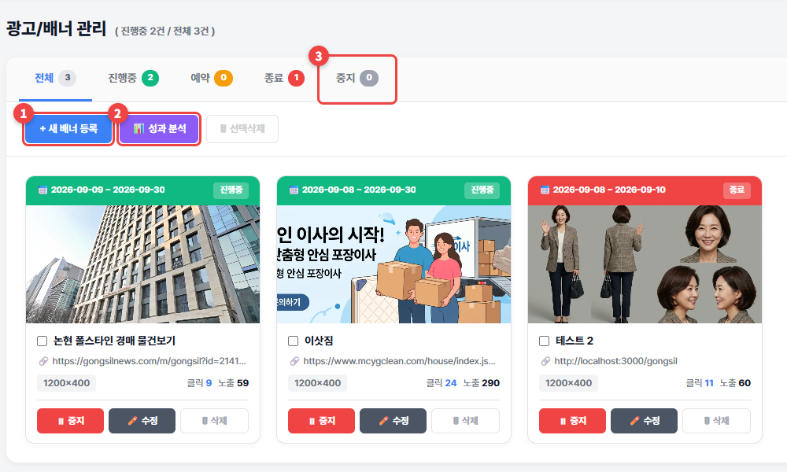
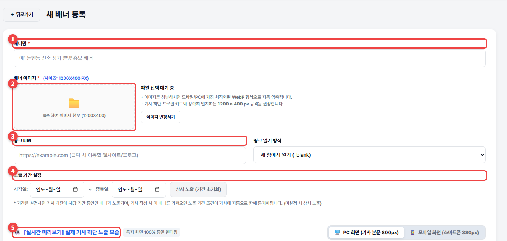

광고관리
내 기사 아래에 나오는 내 배너를 만들고, 노출·클릭 성과를 봅니다.
광고관리로 가기 →🔒 공실뉴스부동산·공실스터디부동산
1
① + 새 배너 등록으로 배너를 만들고 ② 성과 분석으로 클릭·노출을 봅니다. ③ 중지를 누르면 잠시 내릴 수 있습니다.

2
① 배너명 ② 배너 이미지(1200×400px) ③ 누르면 이동할 링크 ④ 노출 기간을 넣으세요. ⑤ 실시간 미리보기로 실제 기사 아래 모습을 확인하고 배너 등록하기를 누르세요.

💡 알아두세요
- 노출 기간을 비우면 기간 없이 계속 나옵니다.
- 만든 배너는 기사관리의 배너광고 칸에서 기사에 붙입니다.